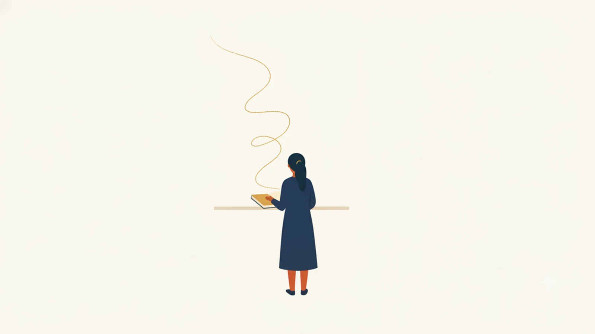

No.001
学び方
思い出す練習の法則(テスト効果)
Retrieval Practice / Testing Effect
- ひとことで
- 読み返すより「思い出そうとする」ほうが、記憶はずっと長持ちする。
- どういう法則か
- 教科書を再読すると「わかった気」になりますが、記憶にはあまり残りません。一方、本を閉じて自力で思い出そうとする(=自分をテストする)と、記憶の定着が大幅に強まります。思い出す行為そのものが脳の中で記憶を強化するためです。
- たしかめられ方
- Roediger & Karpicke (2006, Psychological Science) の実験では、文章を繰り返し再読したグループは1週間後に内容の約40%しか再生できなかったのに対し、再読の代わりに繰り返しテスト(想起練習)をしたグループは約61%を再生できた。直後のテストでは再読組が勝っていたのに、1週間後には逆転していた。
- 気をつけたいこと
- 学習直後の手応えは再読のほうが良く感じるため、多くの人が「効かない方の勉強法」を選びがち。手応えと実際の学習効果は一致しない。
やってみる資料を読んだら閉じて、白紙に覚えていることを書き出してみる。会議や研修の後に「何を学んだか」を人に説明するのも同じ効果がある。
出典：Roediger, H. L., & Karpicke, J. D. (2006). Test-Enhanced Learning. Psychological Science, 17(3), 249-255.